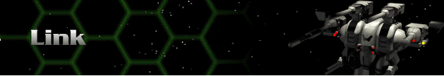
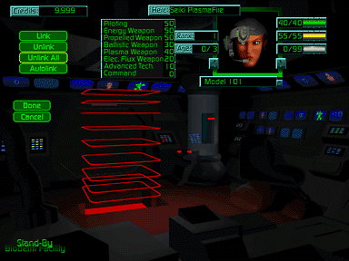

› |
› |
› |
Link |

This is the process of biomechanically linking a Bioderm to a Herc. If no Bioderms are available when you access this area, then you must create them in the Biovat. You have four options in the Link area:
| Link | links the Bioderm currently displayed. When you choose this button, another window opens with a list of available Herc packages (provided you have first purchased Hercs). Make your choice by clicking on it or click Cancel. |
| Unlink | unlinks the Bioderm currently displayed. |
| Unlink All | unlinks all Bioderms from their respective Hercs. |
| Autolink | automatically links each unlinked Bioderm with a Herc. The most expensive Bioderms are matched with the most expensive Hercs. Ideally, you would want to link Bioderms with high ratings for the type of weaponry carried by each Herc, so it might be wiser to manually link each Bioderm. |
